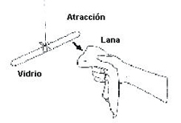
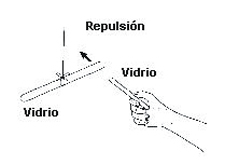
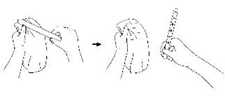

| Objetivo: |
Observar la naturaleza eléctrica de la materia |
| Material |
|
|
| Introducción: |
| La carga eléctrica es una propiedad intrínseca de algunas partículas sub-atómicas que se manifiesta mediante atracciones y repulsiones que determinan las interacciones electromagnéticas entre ellas. La materia cargada eléctricamente es influida por los campos electromagnéticos siendo, a su vez, generadora de ellos. La interacción entre carga y campo eléctrico es la fuente de una de las cuatro fuerzas fundamentales, la fuerza electromagnética. La carga eléctrica es de naturaleza discreta, fenómeno demostrado experimentalmente por Robert Millikan. Por definición, los electrones tienen carga -1, también notada -e. Los protones tienen la carga opuesta, +1 o +e. Los quarks tienen carga fraccionaria −1/3 o +2/3, aunque no se han observado aislados en la naturaleza. En el Sistema Internacional de Unidades la unidad de carga eléctrica se denomina culombio (símbolo C). Se define como la cantidad de carga que pasa por una sección en 1 segundo cuando la corriente eléctrica es de 1 amperio, y se corresponde con la carga de 6,25 × 1018 electrones aproximadamente. |
| Desarrollo Experimental: |
|
Experimento 1:
|
| Resultados y Conclusiones : |
|
1) Explicar lo que pasó. 2) ¿Cómo usted puede concluir que la materia posee naturaleza eléctrica? En el punto 1 notamos que el bastón de vidrio y la lana se atraen y, en el punto 3, el bastón de vidrio colgado irá a repeler el otro. Esto demuestra la presencia de fenómenos eléctricos. Cuando friccionamos los dos materiales, el bastón de vidrio pasa a ser portador de carga eléctrica negativa (en ambos casos por convención). (Figura 3) La lana (cargada negativamente) es atraída por el bastón de vidrio (cargado positivamente). Sin embargo, los dos bastones de vidrio electrificados, con cargas de la misma polaridad, se repelen. Podemos concluir que las cargas eléctricas de signos diferentes se atraen y del mismo signo se repelen. |
| Figura 1 |
|  |
| Figura 2 |
|  |
| Figura 3: El roce electriza la lana negativamente y el vidrio positivamente |
|  |